Published: 2022-09-10
Source link: https://www.cnphotos.net/academy/show-90.html
If every season has its own color,
then autumn must be yellow.
Looking down, I walk on a road of fallen leaves.
The evening breeze carries a chill.
Suddenly, it is autumn.
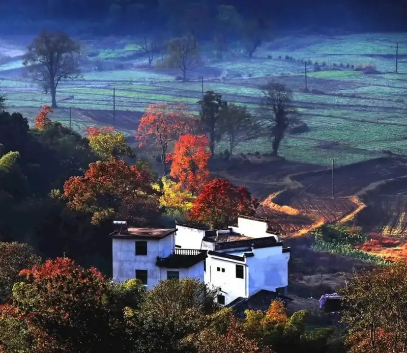
A gust of autumn wind
turns the leaves, the grassland,
turns the hillside, the grassland,and the poplars.…
While everyone is lost in the golden light of Ejina,
Jiuzhaigouthe rich colors of
and the painted forests of Kanas,
some places stay quietly beautiful.
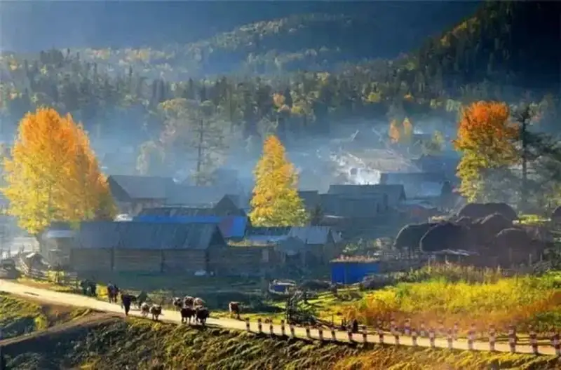
In this vivid autumn,
grey tiles, brick walls, and curling smoke, the ancient villages
hold a charm of their own.
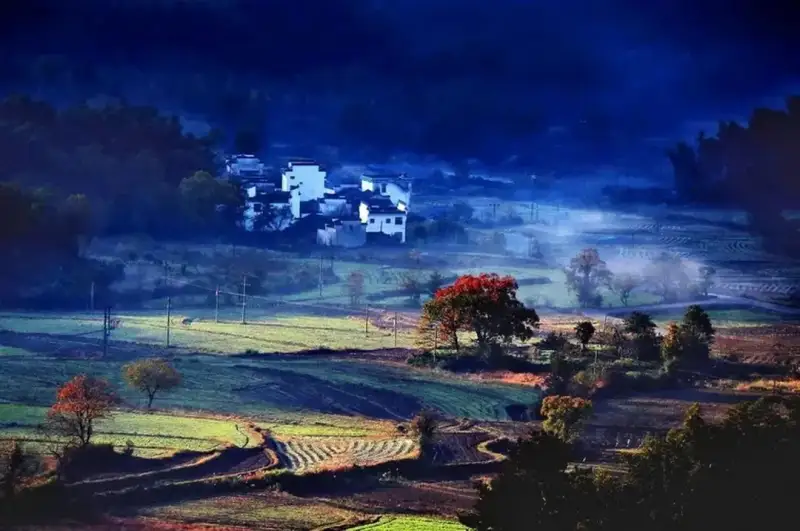
Tachuan
The finest autumn spot in the country
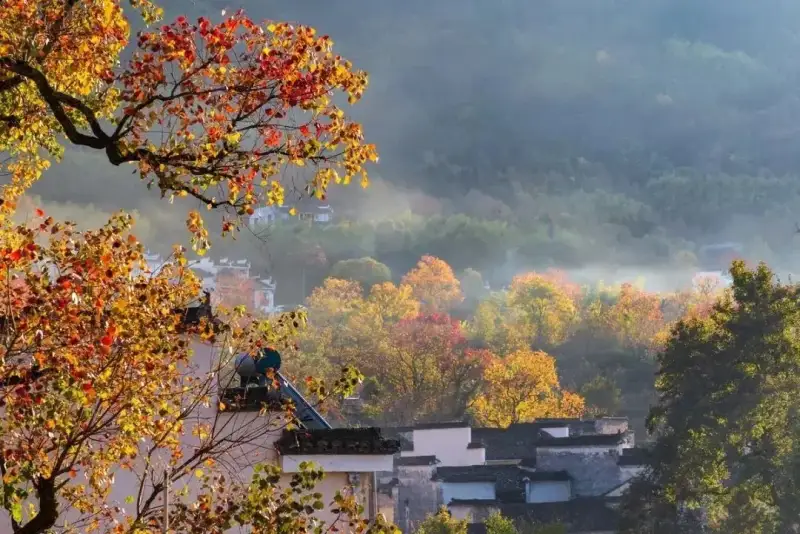
After Tachuan, you need not see another autumn.
Some call it the most beautiful autumn in China.
White walls, dark tiles, and tall horse-head gables,
raw and unhurried,
all cast a spell.
Tachuan village is only two kilometers from Hongcun.
It is less famous than Hongcun,
but it is a paradise for photographers.
Tachuan is most beautiful at dawn.
Thin mist hangs over the trees,
half seen, as farmhouses fade in and out of view.
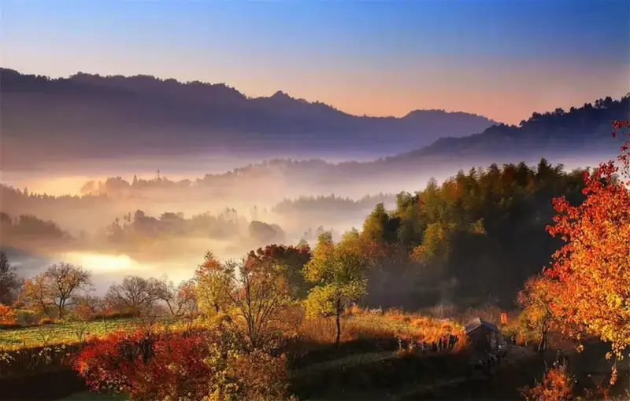
The main trees are tallow trees.
Their leaves turn red before the maples,
but not all at once.
It happens in stages.
The whole hillside is a patchwork of color,
from yellow to pale red to fire red, rich in layers.
Tachuan's autumn
rests before courtyards and in ordinary lanes,
and lingers in the layered hills at sunset.
It waits for you, deep in the mist.
Location: Hongcun Town, Yixian, Huangshan, Anhui
Tengchong Ginkgo Village
A City Clad in Gold
Tengchong's autumn arrives a little late.
While other places rush to show off their autumn dress,
Tengchong does not compete.
It arrives at the tail end of autumn,
and uses just one color
to push autumn to its peak.
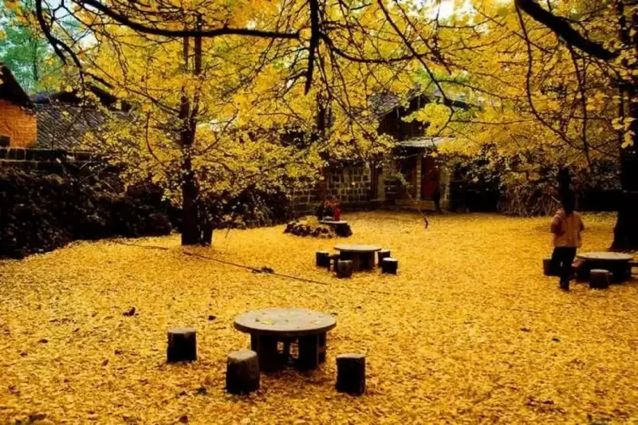
Walk into Ginkgo Village. The romance of the ginkgo trees is not only in the branches. Around the houses, on the tiles, on the paths, leaves cover the ground and the eaves, and everywhere is gold.
The village sits in the woods, and the woods in the village,
like a golden castle.
The ground is a carpet of ginkgo leaves.
Everything you see is golden,
and the scale rivals
the bold sweep of the northwest.
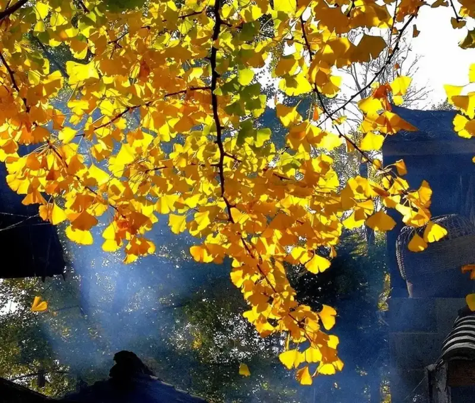
The farmhouse doors are always open.
Step in and rest when you are tired.
At meal time, order local dishes like
chicken stewed with ginkgo nuts, or pig's feet stewed with ginkgo nuts,
tastes you can only find here.
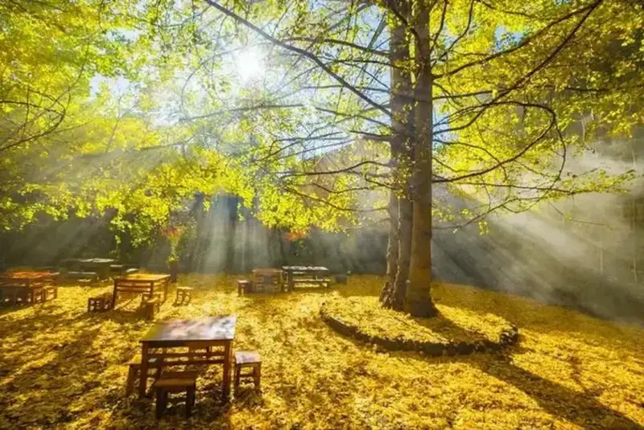
Location: Jiangdong Ancient Ginkgo Village, Gudong, Tengchong, Baoshan, Yunnan
Shicheng
Wrapped in Mist
Shicheng's autumn comes even later,
but its beauty is intoxicating.
When you reach Shicheng, climb the high point and look far,
to watch the dawn mist play among the maples.
Old Huizhou houses of white wall and dark tile stand against ancient maples,
like a dreamlike landscape painting,
extraordinarily graceful.
Location: Cheng and Dai villages, Dazhangshan, Wuyuan, Shangrao, Jiangxi
Hemu Village
God's Own Reserve
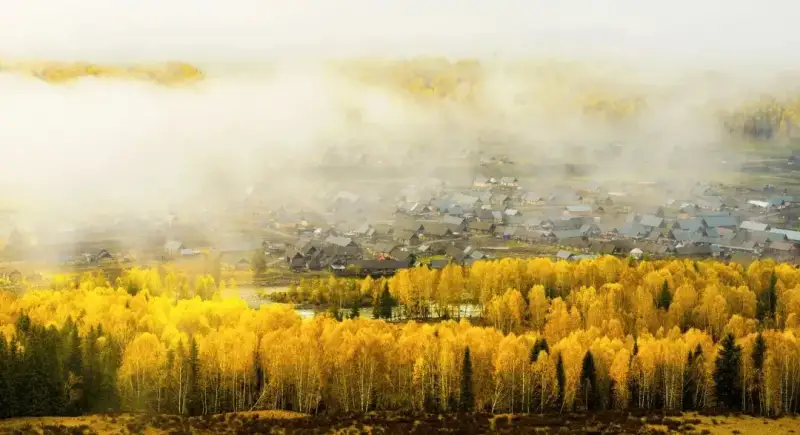
Speaking of autumn,
Xinjiang is always in the conversation.
It has the brightest colors,
the most extreme scenery,
and September to October is its peak.
Every sight leaves you breathless.
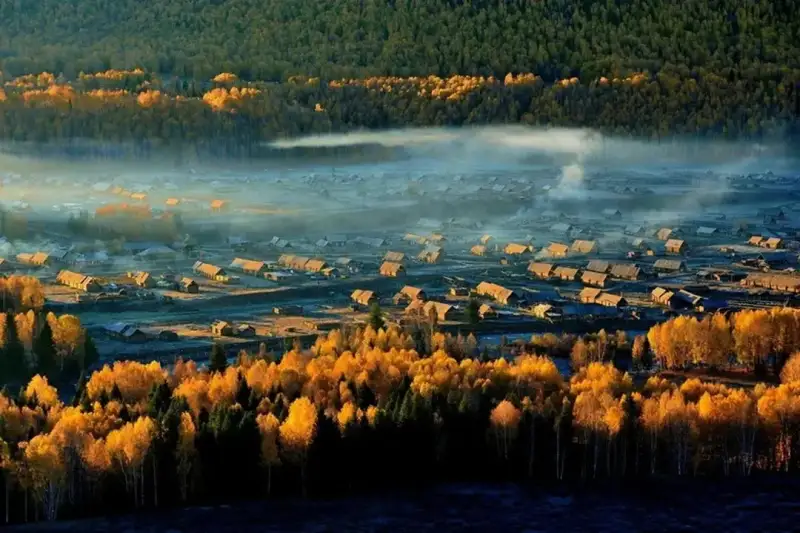
And when you speak of Xinjiang's autumn,
how could you skip Hemu Village, where fairy tales come true?
This is where the Tuvan people live.
Rivers, villages, forests, peaks,
curling smoke, and riders on horseback.
The hills are painted in full color,
and a single glance
is enough to intoxicate.
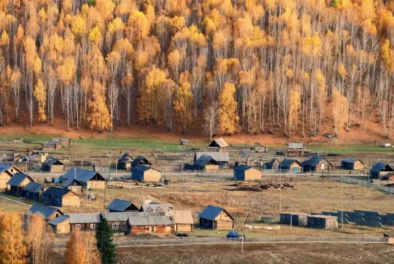
Golden sunlight spills over the valley.
Tuvan wooden houses lie scattered,
and on the winding dirt road
are faint prints of ox hooves.
It is so peaceful
that even the mist slows down.
Hemu keeps the poetry of a fairy tale.
Climb the small hills around Hemu
and look down on the village in the mist.
Everything before you,
in the slanting evening light,
the cattle coming home and the Tuvan children from school,
casts a deep, soulful calm.
Location: Hemu Village, Hemu-Kanas Mongol Township, Burqin, Altay, Xinjiang
Tuole Village
An Ancient Ginkgo Village Out of a Painting
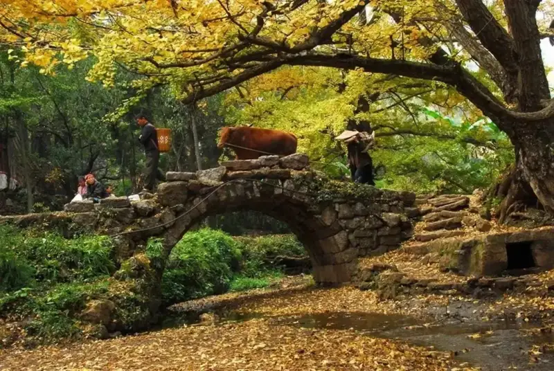
Tuole
has the densest stand of ancient ginkgo trees,
and the best preserved,
and is called the home of the world's ancient ginkgoes.
A village deep in the mountains,
it keeps its original character.
In late autumn, Tuole is a ginkgo paradise.
One glance
gilds your whole view in gold.
Small bridges over water, towering old trees, and ringed by hills,
it is a classic old mountain village.
Tuole has over 1,200 ancient ginkgo trees.
Most are over 300 years old,
and the oldest is over 1,000.
Their trunks rise tens of meters.
By old paths, under eaves, on stone steps, and by streams,
the ginkgo trees appear in every shape.
There is also a group of young monks
at the Xilai Temple in front of the village,
like a real-life comedy temple.
The ginkgo trees across the hills
frame the monks' innocent smiles.
It truly is a hidden paradise.
Location: Tuole Village, Panxian, Liupanshui, Guizhou
Wuyuan
China's Most Beautiful Autumn
Wuyuan's autumn is special.
It has its own colors.
It is a place born for poetry.
Red chilies, orange pumpkins, and golden corn
dot the ink-wash village of Huangling,
an impatient little village.
In the warmth of autumn,
white walls and dark tiles against nature
meet like ice and fire,
and open the curtain on Wuyuan's autumn.
Now Wuyuan is at its richest,
with painted forests everywhere,
an ink painting where man and nature are one.
Go to Shicheng for the mist,
and in the haze be struck by the red leaves on the branches.
Go to Huangling for the autumn drying,
where strings of red chilies on a sunny afternoon
look like red lanterns in the sun.
Go to Changxi for the sunset,
bright yellow, deep dark red, and romantic orange-red,
each with its own mood.
Some say
Wuyuan's autumn
holds a world that does not feel of this earth.
No few words
can capture all its charm.
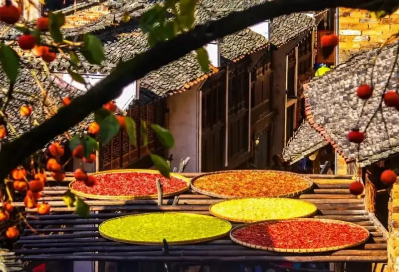
Location: Shangrao, Jiangxi
Danba Tibetan Village
The Finest of the Six Great Ancient Villages
If you are tired of crowds
and cookie-cutter autumn,
come to Danba.
It is called the finest of China's six great ancient towns,
and rightly so.
In golden autumn, the Tibetan villages,
their leaves turning red,
climb the slopes in layers,
orderly and varied,
and with the clear valleys and streams
form a pastoral painting in color.
From the great valley upward
to the foot of the peaks,
on the rolling slopes,
Tibetan houses scatter among colored trees,
like a boldly painted oil work.
Inside the village,
the colors give way to calm.
An ox passing by pays you no mind,
as if you belonged.
I have pictured this peaceful scene a thousand times.
If time allows,
stay a night here
and feel the slow pace of life.
Location: Niexia Township, Danba, Ganzi Tibetan Autonomous Prefecture, Sichuan
Shilin Village
Branches Laden with Poetry in Red
Compared with the villages above, Shilin is
less known.
It lies under Dalan Town, Yuyao,
an old village of over 600 years.
It is small,
but its buildings are well kept,
and each autumn turns into a painting.
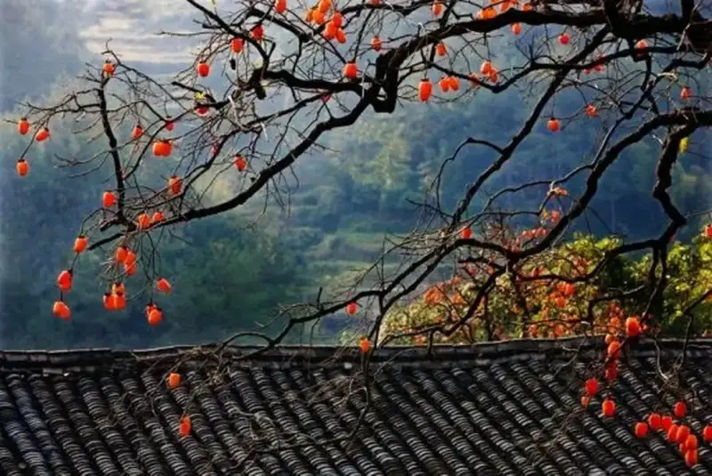
It is named for the persimmon trees across the hills.
A 600-year-old persimmon tree still stands in the village,
full of life.
Every autumn,
the village is at its best
and its busiest.
Bright red persimmons hang high on the branches,
like strings of red lanterns.
When they ripen,
Shilin is at its liveliest,
and every family goes out
to pick persimmons on the hills.
Seeing the big red fruit,
the villagers cannot stop smiling.
As the saying goes, may all your wishes come true.
Villagers and visitors alike
hope for good luck.
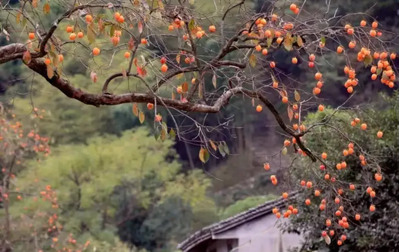
Location: Wangxi Road, Yuyao, Ningbo, Zhejiang
Autumn in an ancient village,
quiet and poetic,
bright but never showy.
Autumn suits an ancient village best.
Find a quiet old village,
stay a few days,
and you have lived a full autumn.